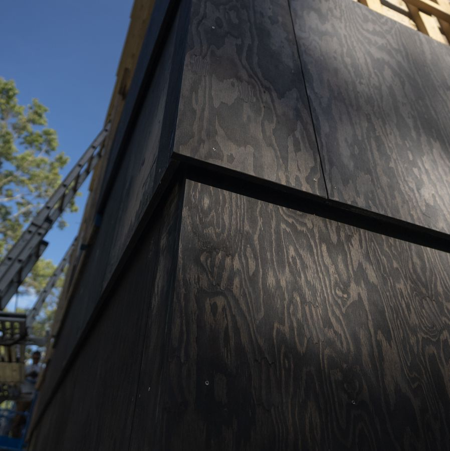
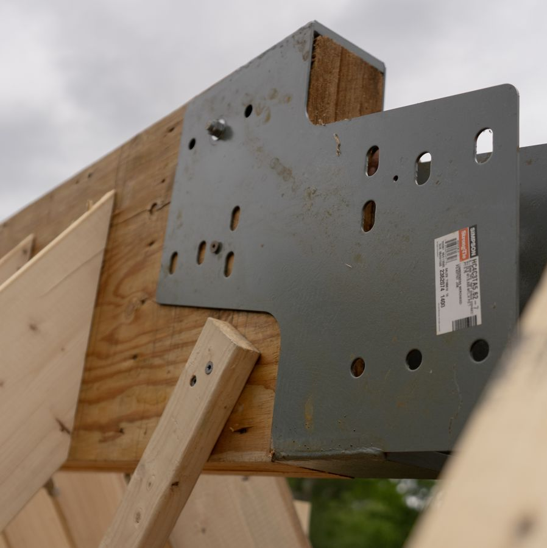
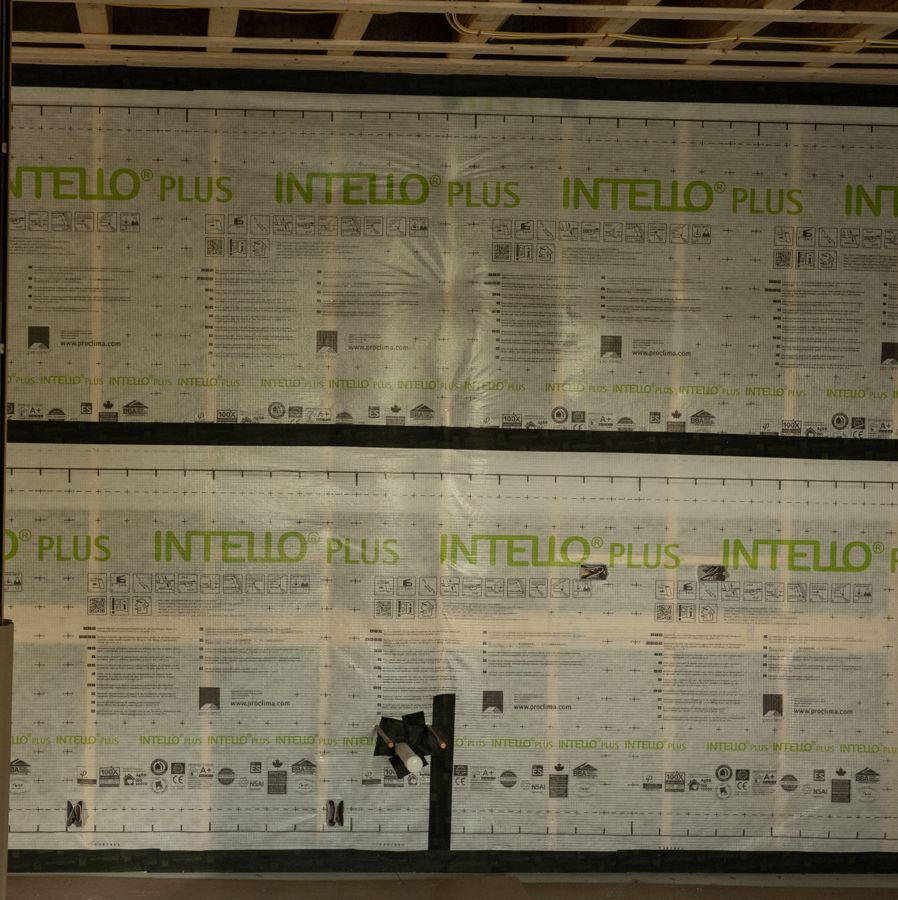
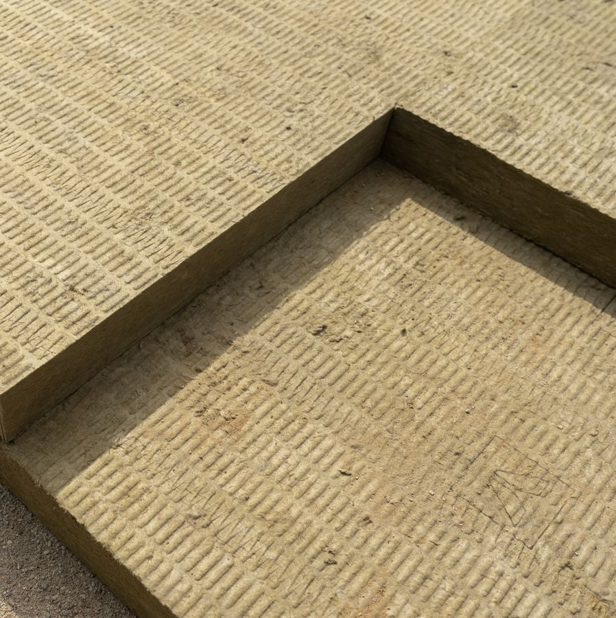
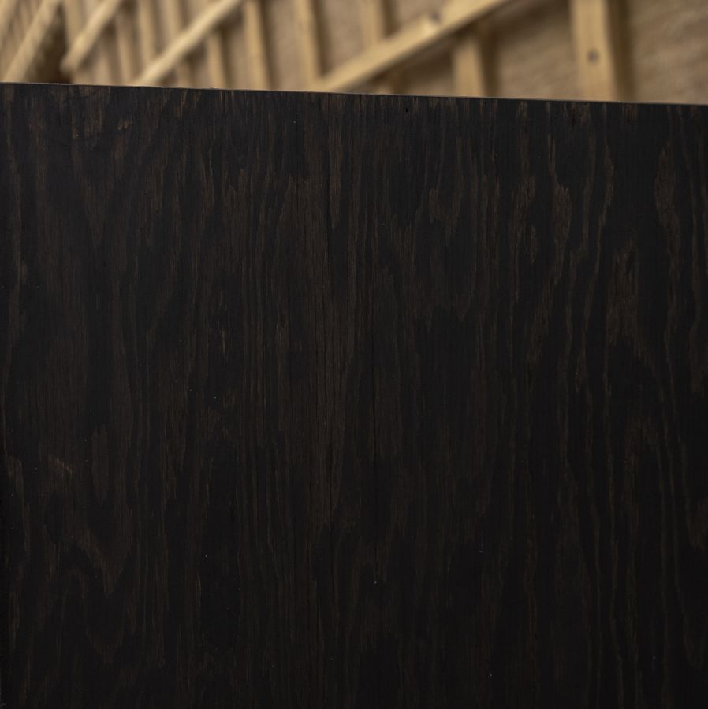
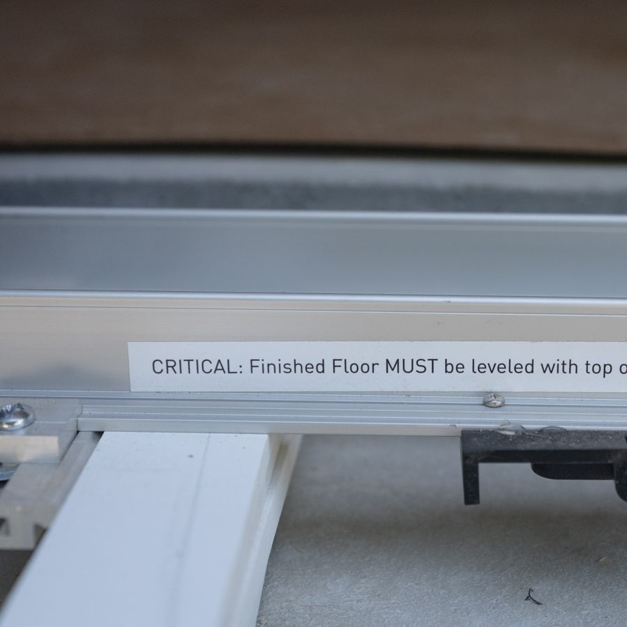
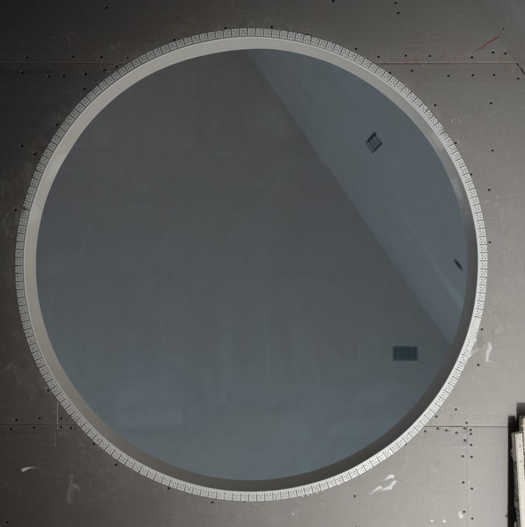
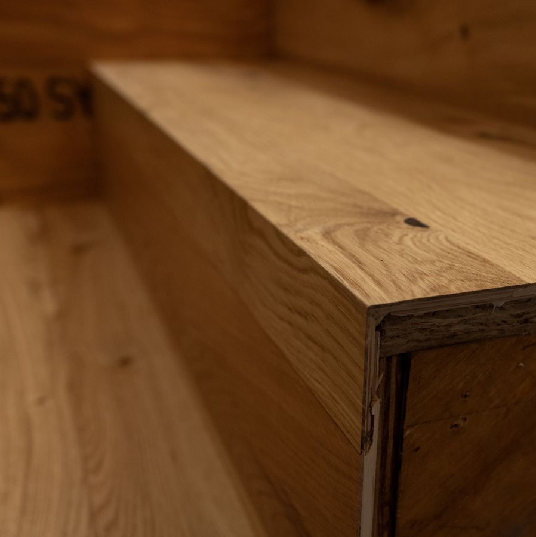
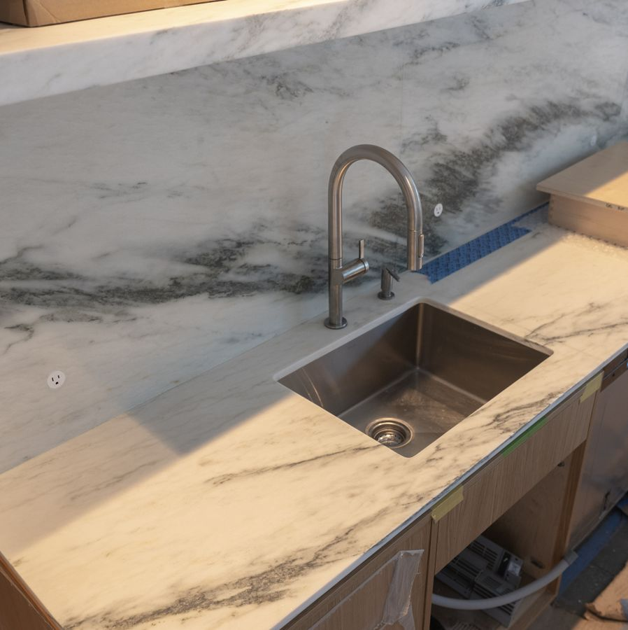
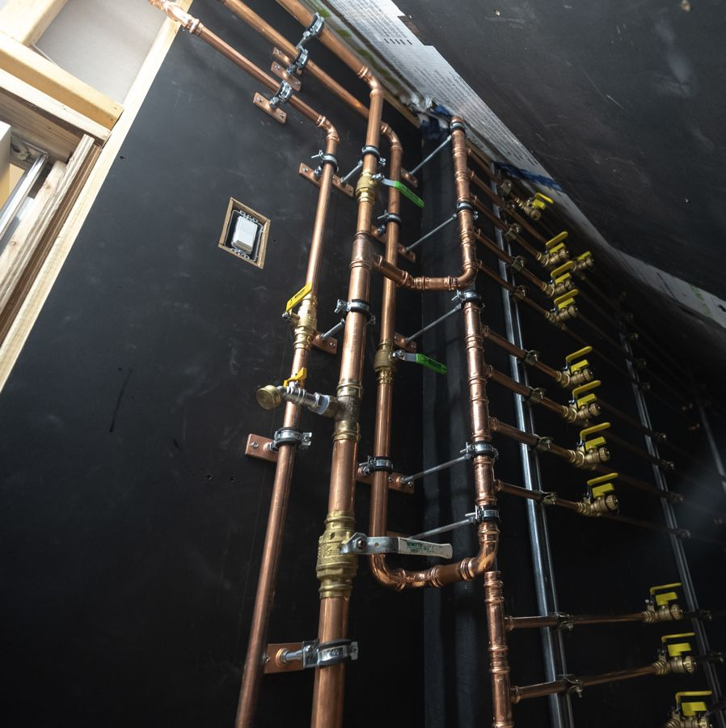

Build
How the house is made, from the ground up, in the order it was built. This page is for the reader who wants the layers named: the architect, the builder, the person planning a house of their own. NS Builders documented the work in public as it happened, and Of Possible drew every assembly. The figures here come from that record, and the page lists only what the record supports.
{kind=link}

{kind=link}

{kind=link}

{kind=link}

{kind=link}

{kind=link}

{kind=link}

{kind=link}

{kind=link}

{kind=link}

Materials up close. Photographs by Motif Media.
The house in brief
- Place
- Canton, Massachusetts, on about 11 acres of woods and wetland beside a kettle pond
- Size
- 2,600 sq ft: a main house and a studio under one gable roof, joined by an open breezeway
- Architect
- Of Possible (Vincent Appel)
- Builder
- NS Builders (Nick Schiffer)
- Landscape
- Dialogue-Environment (Terry Fitzpatrick)
- Foundation
- Frost-protected shallow foundation; the polished structural slab is the finished floor
- Structure
- Panelized wood frame, 2x10 exterior walls at 16 in. on center
- Envelope
- Passive House-level: mineral wool inside and outside the sheathing, between two Pro Clima membranes, behind a vented cavity
- Cladding
- Half-sheet shingles of Roseburg marine-grade plywood, coated on all six sides in pine tar, on walls and roof alike
- Glass
- Andersen lift-slide units, 9 ft tall, across the first floor; Velux roof windows
- Air and heat
- ERV in the main house, Lunos in-wall HRV in the studio, no radiant slab
- Built
- September 2024 to February 27, 2026
The wall, from inside to outside

The wall is the idea of the house in section. Every layer has one job.
- Veneer plaster, over 1/2 in. blueboard, painted. It meets the floor at a 3/8 in. reveal, with no baseboard.
- Pro Clima Intello Plus, a smart vapor retarder: a membrane that tightens against moisture in winter and opens in summer, so the wall can dry in either direction.
- 2x10 framing at 16 in. on center, the 9.5 in. cavity filled with two layers of Rockwool ComfortBatt mineral wool.
- 1/2 in. sheathing.
- Pro Clima Adhero 3000, a self-adhered membrane that keeps water and wind out and lets vapor through.
- Rockwool ComfortBoard, a continuous layer of rigid mineral wool outside the sheathing, so the framing never meets the cold.
- Pressure-treated strapping, screwed through the board at 16 in. and cut on a bevel to set the angle of each shingle. It forms a cavity that is open at the bottom, behind an insect screen, and runs up the wall, over the roof, and out at a ridge vent. Cor-A-Vent closes the lowest course.
- The shingle: marine-grade plywood, pine-tarred on all six sides, with an eighth-inch gap to its neighbors.
Mineral wool is used throughout because it does not burn, does not hold water, and lets vapor pass. With the two membranes, it lets the wall dry to either side.
Site and road

- Access road
- About 1,400 ft, gravel
- Earthwork
- About 3,000 cubic yards moved; ledge broken with explosives
- Water
- 6 in. ductile-iron line the length of the road, to a fire hydrant at the house
- Wastewater
- On-site septic
- Civil engineer
- Site Design Professionals (Paul Brodmerkle)
- Geotechnical
- S.W. Cole Engineering
- Sitework
- Michael S. Coffin LLC
The house sits at the far end of its land, so the road came first and was the largest single piece of work outside the house itself. It crosses a wetland on a culvert whose design was reworked collaboratively during construction. The water line ends at a fire hydrant beside the house, at the end of a private gravel road.
Boulders produced by the blasting were set along the road edge and around the house, placed to read as ledge that was always there.


Foundation and slab

- Type
- Frost-protected shallow foundation: a slab on grade, with no frost wall
- Formwork
- MonoSlab foam forms, left in place as edge insulation
- Under the slab
- 6 in. of Rockwool ComfortBoard 110; high-density foam under the footings
- Beyond the slab
- Insulation runs out horizontally about 4 ft past the edge
- Vapor barrier
- Stego, 15 mil
- Layout tolerance
- Within 1/4 in. corner to corner, on a house a little over 100 ft long
- Finish
- The structural slab, polished to a salt-and-pepper exposure, is the finished floor
- At the edge
- Cement board and a parge coat; a perimeter drain in gravel
A conventional New England foundation goes down four feet to get below the frost. This one stays near the surface and keeps the frost away instead: insulation under the slab and out past its edge holds the ground's own heat beneath the house. The foam forms that shape the concrete stay in place as part of that insulation.
Because the slab is also the finished floor, there was one chance to get it right. The lift-slide doors allow almost no variation between the floor and the bottom of the door, so the slab was laid out to a quarter inch across its full length and then polished just far enough to show fine aggregate. There is no radiant heat in it.


Frame

- System
- Semi-prefabricated wood frame, pre-cut and panelized by Cape Cod Panel
- Exterior walls
- 2x10 at 16 in. on center
- Sheathing
- 1/2 in.
- Structural engineer
- H+O Structural Engineering
The frame was drawn, cut and panelized off site, then stood on the slab. Prefabrication suits this house because the form is one extrusion: a single gable, a little over 100 ft long, with a breezeway cut through it and the second floor bridging over. The depth of the 2x10 wall is set by the insulation it holds.

Envelope

- Performance
- Passive House-level envelope
- Interior membrane
- Pro Clima Intello Plus, seams taped
- Cavity insulation
- Two layers of Rockwool ComfortBatt, 9.5 in.
- Exterior membrane
- Pro Clima Adhero 3000, self-adhered, vapor-open
- Exterior insulation
- Rockwool ComfortBoard, continuous over walls and roof
- Rainscreen
- Pressure-treated strapping at 16 in.; cavity vented at the base and at the ridge
Old New England houses failed in two ways: they leaked heat, and they held water. This envelope answers both. The exterior mineral wool wraps walls and roof without a break, so the studs and rafters are never a path for cold. Behind the shingle, air moves freely from the bottom of the wall to the ridge, so anything that gets wet can dry.


Shingle and roof

- Material
- Roseburg marine-grade plywood, each shingle half of a 4x8 sheet
- Finish
- Pine tar mix by Sage Restoration, on all six sides
- Joints
- 1/8 in. gap, held along walls about 100 ft long
- Corners
- Not woven: the long walls lap the short walls
- Roof
- The same shingle as the walls
- Gutters
- One, over the breezeway
The shingle is a New England idea at a different scale. A cedar shingle is sized to the hand; this one is sized to the sheet, a four-by-eight cut in half, so the house reads as a few large courses and wall and roof become one surface. Pine tar is among the oldest wood preservatives in both Scandinavia and New England, and it can be renewed in place.
Every shingle was coated on all six faces, because plywood fails from its edges. Vincent Appel gives a related reason for how the panels are oriented: “We didn’t want end grain facing the sky.” The eighth-inch gap is unforgiving over a hundred feet, so NS Builders cut and squared every panel before hanging it, then tarred the fresh edges again.


Glass

- First floor
- Andersen lift-slide units, 9 ft tall, floor to ceiling
- Exterior finish
- Aluminum, sandblasted and then clear anodized
- Interior finish
- Douglas fir, clear coated
- Threshold
- Flush: the slab is recessed under each unit
- Screens
- Fixed
- Roof
- Velux roof windows and a Velux skylight
Nearly every opening on the first floor is a door used as a window. The lift-slide units were chosen so that the wall could be glass from the floor to the ceiling and still open. The screens are fixed by choice: an operable screen needs a third track and a deeper unit, in a wall designed to be narrow.
The aluminum is sandblasted before it is anodized, which takes the shine off and leaves a soft gray beside the black shingle. Each unit sits in a pocket recessed into the slab, so the polished concrete runs to the glass with no step.


Interior

- Walls and ceilings
- Veneer plaster over blueboard, painted
- At the floor
- 3/8 in. reveal, no baseboard
- Doors
- Ceiling height, no head casing, frames plastered in; pocket-door tracks buried in the ceiling
- Millwork
- White oak, by Materia Millwork, NS Builders' own shop
- Counters
- Vermont Danby marble, fabricated by Boston Counters
- Floors
- Polished concrete downstairs, wood upstairs
The interior has four materials: plaster, concrete, white oak and marble. With so few, the joints between them carry the design. A wall with no baseboard has to be flat and straight to the floor, since nothing covers the meeting; the wallboard was hung clear of the floor on a temporary strip so the reveal bead and the flooring could slide beneath it.
Doors run to the ceiling so that an open door leaves no wall above it. A circular opening on the second floor looks down into the living room.


Air, heat and power

- Main house ventilation
- Energy recovery ventilator (ERV), ducted
- Studio ventilation
- Lunos in-wall heat recovery units, working in pairs
- Slab
- No radiant heat
- Electrical
- Span smart panels
A tight house needs fresh air supplied on purpose. The main house has a ducted ERV, which exchanges heat and moisture between outgoing and incoming air. The studio has no ductwork. It uses pairs of Lunos through-wall units that alternate direction, each storing heat from the outgoing air and returning it to the incoming. On the roof, the vents and flues were gathered and set in a line.


Landscape

- Landscape architect
- Terry Fitzpatrick, Dialogue-Environment
- Seed
- Four custom native mixes from Ernst Conservation Seeds
- Roadside mix
- 27 PLS lb per acre, with annual ryegrass as a cover crop in the mix
- Steep-slope mix
- 55 PLS lb per acre, no cover crop
- Shade-to-wet mix
- 12 PLS lb per acre under a rye cover crop; sedges and rushes
- Showy meadow mix
- Butterfly milkweed, rattlesnake master, coneflowers, asters, sideoats grama
- Erosion control
- Jute mesh on the slopes
- Installation
- Land Design Associates
The disturbed ground was not given one meadow. It was read as four conditions (the road edge, the steep cuts, the sunny east side, the shaded wet ground) and each was given its own seed. The upland mixes lean on sideoats grama, bottlebrush grass and purple lovegrass, with milkweeds, coneflowers, oxeye sunflower and three asters. The wet mix is lurid, blunt broom and fox sedge, soft rush, fowl mannagrass and northern bulrush, with golden alexanders.
Several of the species are Pennsylvania and Rhode Island ecotypes. “PLS” means pure live seed: the rate counts only seed that will germinate.

Team
- Architect
- Of Possible
- Builder
- NS Builders
- Landscape architect
- Dialogue-Environment
- Structural engineer
- H+O Structural Engineering
- Civil engineer
- Site Design Professionals
- Geotechnical engineer
- S.W. Cole Engineering
- Framing package
- Cape Cod Panel
- Millwork
- Materia Millwork
- Sitework
- Michael S. Coffin LLC
- Landscape installation
- Land Design Associates
- Stone fabrication
- Boston Counters
- Photography and film
- Motif Media
- Plywood
- Roseburg
- Pine tar
- Sage Restoration
- Mineral wool
- Rockwool
- Membranes
- Pro Clima
- Vapor barrier
- Stego
- Slab formwork
- MonoSlab
- Cavity vent
- Cor-A-Vent
- Lift-slide units
- Andersen
- Roof windows
- Velux
- Studio ventilation
- Lunos
- Electrical panels
- Span
- Seed
- Ernst Conservation Seeds
Details are added as they are confirmed. Last updated September 2026.